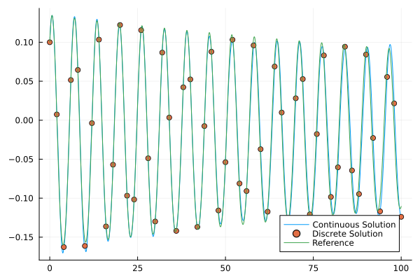

Variational Integrator with Symbolic Expression (VISE)
Basic Usage
At first, we have to load several packages:
using Symbolics
using CompactBasisFunctions
using NonlinearIntegrators
using QuadratureRules
using GeometricProblems
using GeometricIntegratorsBaseAdditional package would be required if we want to use Nested Sindy expression.
using SymbolicsLike what we would do in GeometricIntegrators.jl, we first define the problem we want to solve. The type of problem here is restricted to Lagrangian ordinary equations, i.e. models have a regular Lagrangian and its Lagrangian equation of motions.
T = 100.0
h_step = 2.0
HHlode = GeometricProblems.HenonHeilesPotential.lodeproblem([0.1,0.1],[0.1,0.1],timespan = (0,T),timestep = h_step)For each dimension of generalized coordinates q = (q<sub>1</sub>, q<sub>2</sub>), we prescribe a expression that approximates the coordinates.
@variables W1[1:4] W2[1:4] t
q₁_expr = W1[1] *cos(W1[2]* t + W1[3]) + W1[4]
q₂_expr = W2[1] *cos(W2[2]* t + W2[3]) + W2[4]then define a basis object for variational Galerkin integrator, in this case, a Polynomial-Radial basis for the two dimension problem.
vise_basis = VISEBasis{Float64}([q₁_expr,q₂_expr], [W1,W2], t,2)along with a chosen quadrature rule, and initial guess for the parameters in the expression, we define the integrator, and start the game :)
vise_method = VISE(vise_basis, QGau8,[[0.14831,1.0,-0.64812,- 0.018712],[0.14298,- 0.97215,0.7615,-0.0013983]])
vise_sol = integrate(HHlode, vise_method)One good thing about continuous Galerkin variational integrators is that you could record the coordinates values between two discrete steps for free!
The second element of the returned tuple holds one such record per time step, sampled on a uniform grid over the step. record_grid_points sets its size — 41 points by default, which is the h_step/40 spacing the plot below assumes, and the same keyword the network integrators take:
vise_method = VISE(vise_basis, QGau8, init_w; record_grid_points = 81)(init_w being the initial-parameter vector spelled out in full above.)
HHlode_ref = GeometricProblems.HenonHeilesPotential.lodeproblem([0.1,0.1],[0.1,0.1],timespan = (0,TT),timestep = h_step/50)
ref_sol = integrate(HHlode_ref, ImplicitMidpoint())
using Plots
sol_mat = hcat(vise_sol[2][:,2:end,1]'...)[1,:]
plot(collect(h_step/40:h_step/40:TT),sol_mat,label = "Continuous Solution")
scatter!(collect(0:h_step:TT),collect(vise_sol[1].q[:,1]),label = "Discrete Solution")
plot!(collect(0:h_step/50:TT),collect(ref_sol[1].q[:,1]), label = "Reference")